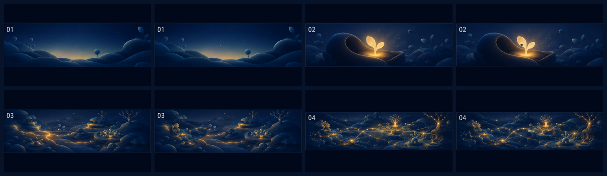
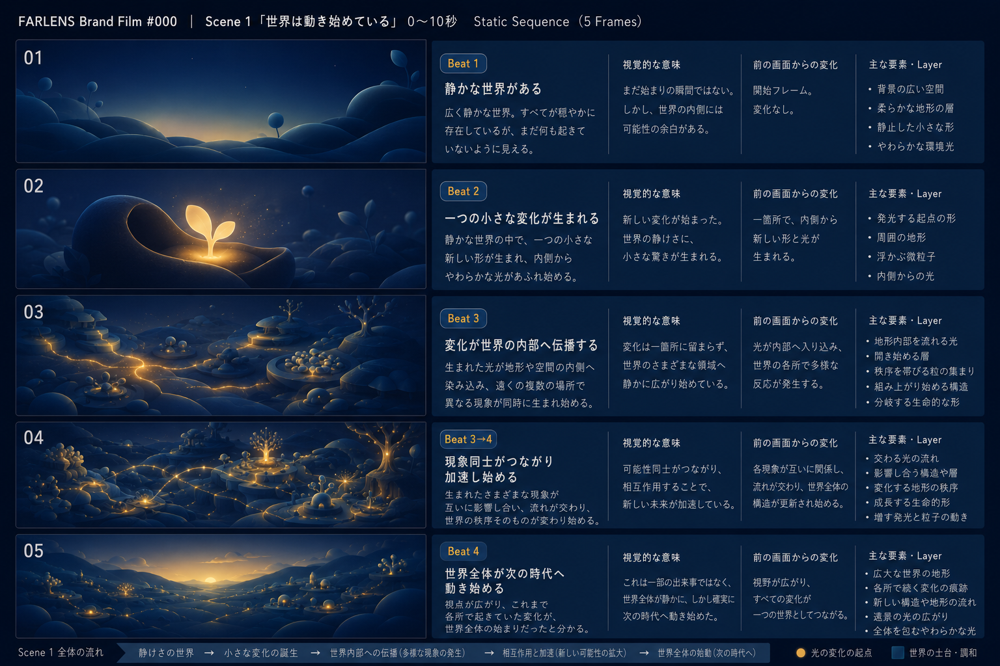

FARLENS BRAND FILM #000 · WORKING TEST
Scene 1 Motion Blocking
「世界は動き始めている」0〜10秒。採用済み5 Framesの意味とテンポだけを検証するStage 3プレビューです。
NON-CANONICAL · NO AUDIO · FIXED CAMERA
PLAY FIRST
10秒 Motion Blocking
FRAME / BEAT MAP
意味の進行
- Frame 1 · Beat 1静かな世界。微弱な呼吸のみ。
- Frame 2 · Beat 2一つの小さな変化が生まれる。
- Frame 3 · Beat 3異なる現象へ時差で伝播する。
- Frame 4 · Beat 3→4現象同士が接続し、相互作用と加速が始まる。
- Frame 5 · Beat 4視点が広がり、世界全体が動き始める。
TEMPORAL EVIDENCE
Transition Contact Sheet

全体Contact Sheet
SOURCE OF TRUTH
採用済みStatic Sequence

SHA-25697bfd90afc8e6ceaa6d6bf3e8a26d78b6cf9b9d506240af5fd84fb5b9d290c59